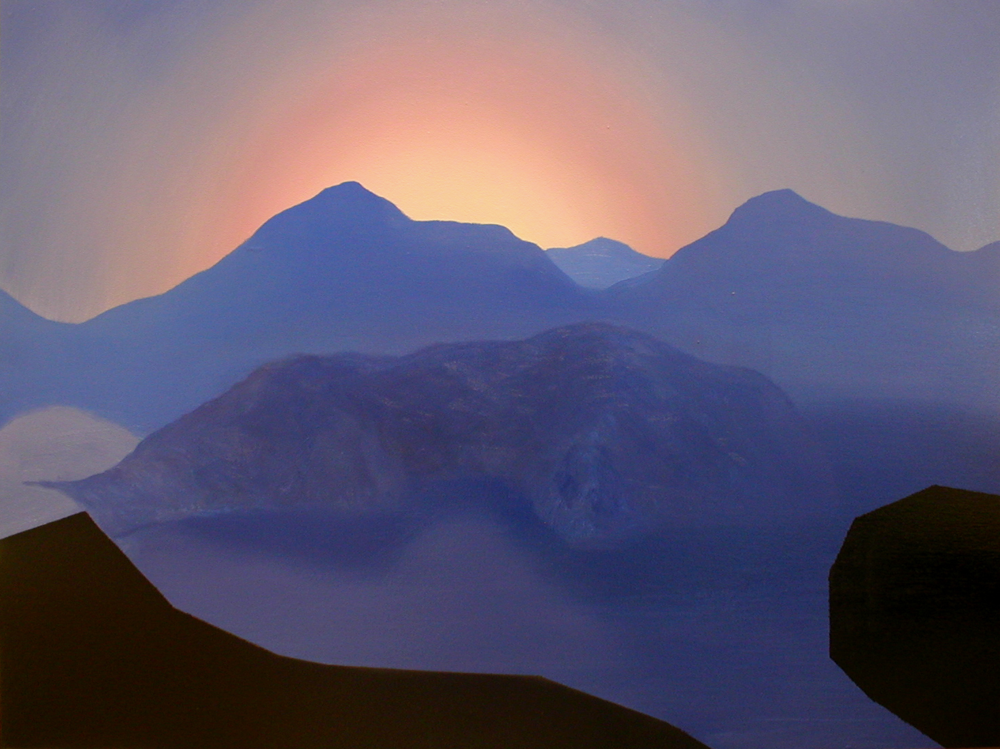
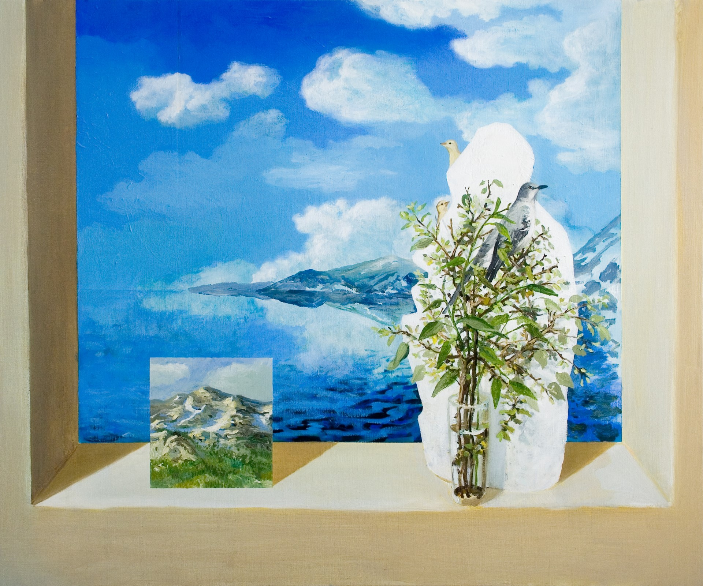
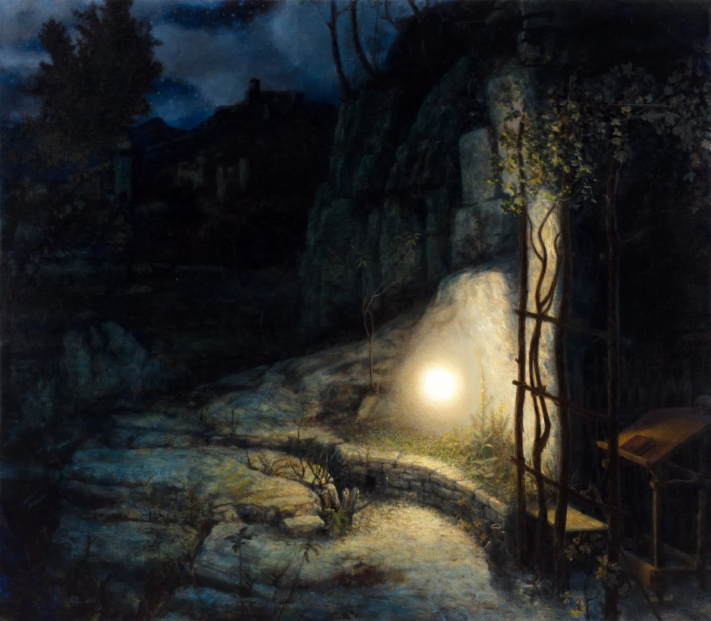
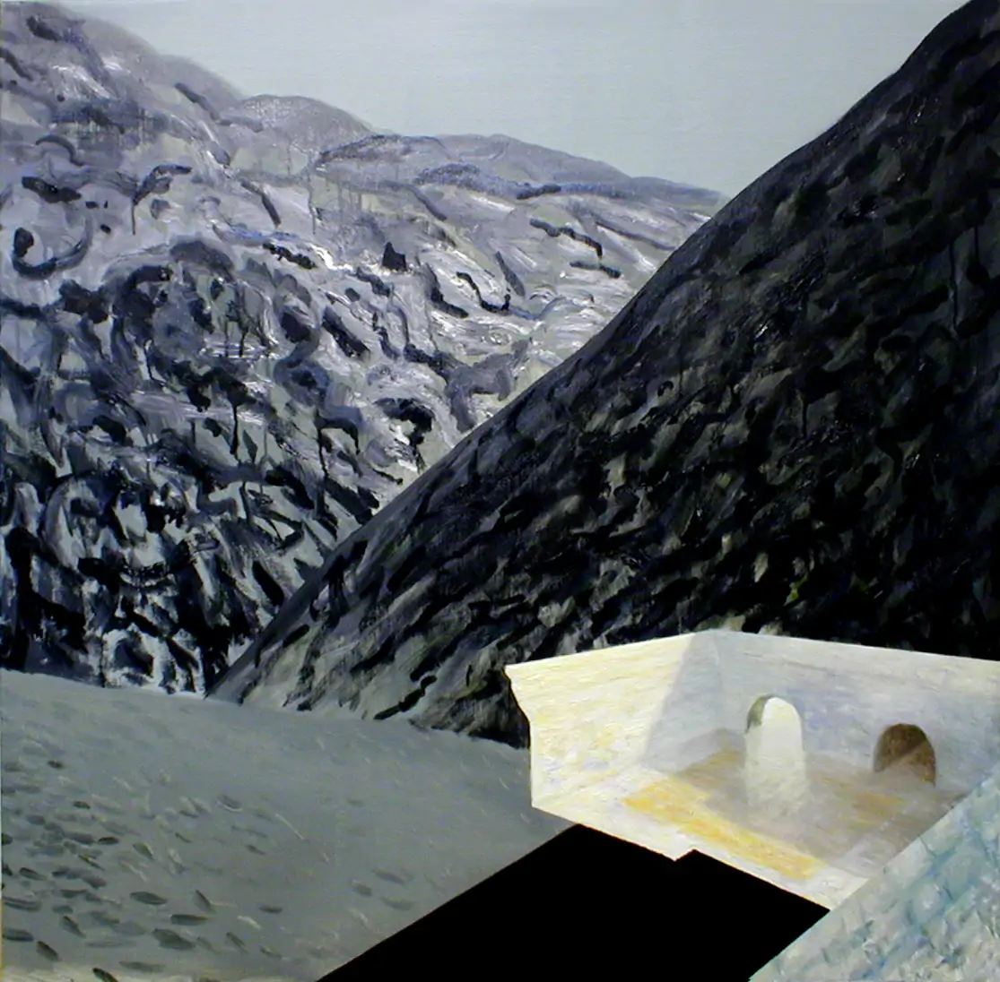
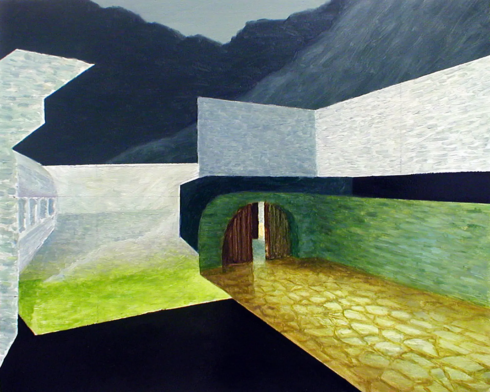
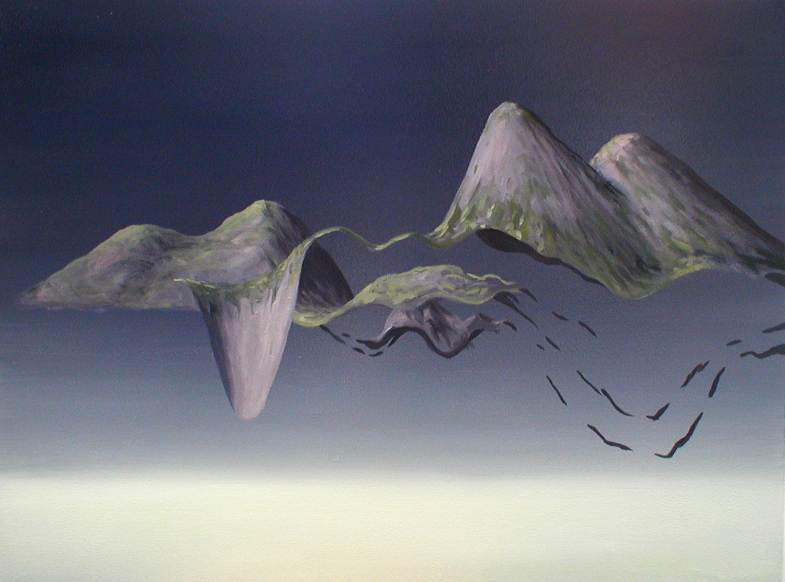

Artistic Response Playlist
All paintings by Kristoffer
Zetterstrand
All music by C418 (Daniel Rosenfeld)
1.) Song: “Dry Hands” by C418 (Daniel Rosenfeld) Listen
↗
- The artwork that I feel complements or resonates with this song
is an oil painting called “Sunset dense” by Kristoffer
Zetterstrand. The dry and rocky mountains in the distance fit with the dry piano
of the song. Ironically, the song’s introduction feels like a conclusion; an end. In fact, the
song feels like the end of a day, and sunsets are a gift that we get to witness at the end of a
day.
|

|
|
“Sunset dense” by Kristoffer Zetterstrand
|
2.) Song: “Wet Hands” by C418 (Daniel Rosenfeld) Listen
↗
- The artwork that I feel complements or resonates with this song
is an oil painting called “Seaside” by Kristoffer
Zetterstrand. The opposite of Dry Hands. This painting features mountains by a
blue lake and it fits with the wet piano of the song. The melodies are loose and the notes flow like
liquid.
|

|
|
“Seaside” by Kristoffer Zetterstrand
|
3.) Song: “Key” by C418 (Daniel Rosenfeld) Listen
↗
- The artwork that I feel complements or resonates with this song
is an oil painting called “The orb” by Kristoffer
Zetterstrand. This painting is based on the painting “St. Francis in
Ecstasy” by Giovanni Bellini. The soft glow of
the mysterious orb and the eeriness of the dark night fits well with the soft and muffled melodies of
Key. When I listen to this song, I think of this painting. It feels like the mysterious orb is the one
producing the music.
|

|
|
“The orb” by Kristoffer Zetterstrand
|
4.) Song: “Ki” by C418 (Daniel Rosenfeld) Listen
↗
- The artwork that I feel complements or resonates with this song
are multiple oil paintings called “de_aztec”, “de_aztec2” and
“LowMist”, all by Kristoffer Zetterstrand.
“De_aztec” and “de_aztec2” are oil paintings based on the video game series
Counter Strike, and “LowMist” are his original digital renders of mountains. All of these
paintings are in what we call “Free-look perspective” or “No-clip perspective”.
It is when players in a video game pass through normally impenetrable objects like walls, ceilings, and
floors. Games are usually programmed so that players stay within the physical boundaries of the game
world. However, when players use cheats to bypass this, it creates a very interesting perspective.
Essentially, we are looking at the game from inside the walls. The song “Ki” fits very well
with this. When listening to the song, you feel like there is something wrong. It’s like you
aren’t supposed to be hearing what you are hearing. You aren’t supposed to see what you are
seeing. You aren’t supposed to be inside the walls. You are dead.
|

|
“de_aztec”
by Kristoffer Zetterstrand
|
|

|
“de_aztec2”
by Kristoffer Zetterstrand
|
|

|
“LowMist” by Kristoffer Zetterstrand
|
5.) Song: “Alpha” by C418 (Daniel Rosenfeld) Listen
↗
- Alpha is a very special song to me. It is the second song from
his album: Volume Beta and it is over ten minutes
long. It is my favourite song from Daniel. It is a medley of his best songs from
his previous album: Volume Alpha. The artwork that I
feel complements or resonates with this song are all of Kristoffer
Zetterstrand’s paintings, mostly his earlier paintings from
2007–2010. All of the songs and all of the paintings that I have featured in this task are in the
game Minecraft. Daniel’s ambient and soft approach
to music fits very well to Kristoffer’s soft and weird approach to paintings. Kristoffer’s paintings have a weird mix of classical
traditional art, and computer graphics like video games. His medium is mostly oil paintings but the
subjects in his paintings have modern themes like video games. A YouTube video titled
“Who
Made the Minecraft Paintings and What Do They Say About The Game?” is
a good video explaining Kristoffer’s art. You can take a look at his paintings on his website —
zetterstrand.com/works.
Christian G. Canturias BSCS-I · © 2024, May 02
Task 3 – Artistic Response Playlist · Art Appreciation
(GE–AA)
Mrs. Risa Mamigo · T–TH (16:00–17:30)